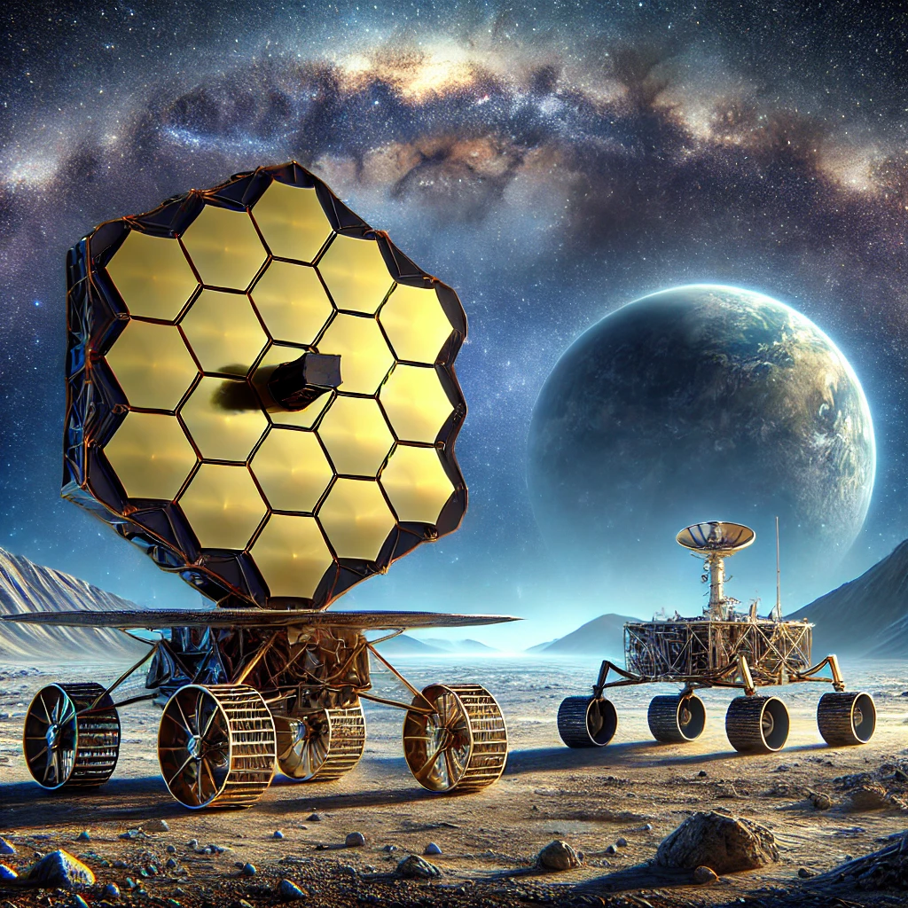

Blackhole
A black hole is a region in space where gravitational forces are so strong that nothing, not even light, can escape from it. This phenomenon occurs when a massive star exhausts its nuclear fuel and collapses under its own gravity, leading to a singularity—a point of infinite density. The boundary surrounding a black hole is called the event horizon; once anything crosses this threshold, it is irrevocably drawn into the black hole.
Black holes can be categorized into three main types: stellar black holes, formed from collapsing stars; supermassive black holes, which reside at the centers of galaxies and can contain millions to billions of solar masses; and intermediate black holes, which are less understood and lie between the two.
Despite being invisible, black holes can be detected through their interactions with nearby matter. As material spirals into a black hole, it heats up and emits X-rays, providing astronomers with clues about their existence. Black holes challenge our understanding of physics, particularly in relation to the fundamental nature of space, time, and gravity. Ongoing research continues to explore their enigmatic properties, shedding light on the cosmos and the fabric of reality itself.
Eclipse

An eclipse is a celestial event that occurs when one astronomical body moves into the shadow of another body, temporarily obscuring it from view. There are two primary types of eclipses: solar and lunar.
A solar eclipse happens when the Moon passes directly between the Earth and the Sun, casting a shadow on Earth. This can be total, where the Sun is completely obscured, or partial, where only a portion is covered. Total solar eclipses are rare and create dramatic changes in daylight, causing the sky to darken and temperatures to drop.
A lunar eclipse, on the other hand, occurs when the Earth passes between the Sun and the Moon, causing the Earth’s shadow to fall on the Moon. This can also be total, partial, or penumbral, with total lunar eclipses often giving the Moon a striking reddish hue, known as a "blood moon."
Eclipses have fascinated humans for centuries, inspiring myths and scientific inquiry. They offer valuable opportunities for scientists to study the Sun’s corona and the Earth-Moon system. Each eclipse is a reminder of the intricate dance of celestial bodies in our solar system, captivating observers around the world with their beauty and rarity.
OSIRIS-REx Mission

The OSIRIS-REx mission is NASA's first asteroid sample return mission, launched to study the near-Earth asteroid Bennu. The mission aimed to explore Bennu's composition, which is believed to hold clues about the early solar system and the origins of organic compounds that may have led to life on Earth. After a seven-year journey, the spacecraft successfully returned a sample capsule to Earth on September 24, 2023.
The spacecraft used its robotic arm to collect surface material from Bennu in 2020. This sample, approximately 250 grams, is the largest extraterrestrial material brought back to Earth since the Apollo moon landings. Scientists hope that studying this pristine asteroid material will provide new insights into the processes that shaped the early solar system over 4.5 billion years ago.
The mission also helped test new techniques for future planetary defense missions, as Bennu is considered a potentially hazardous asteroid. OSIRIS-REx's successful sample return marks a significant milestone in planetary science and opens the door to more complex asteroid exploration missions in the future
The spacecraft is now on a new mission called OSIRIS-APEX, heading to study another asteroid, Apophis, in the coming years.
MOXIE Oxygen Experiment

The MOXIE (Mars Oxygen In-Situ Resource Utilization Experiment) experiment, part of NASA's Perseverance rover mission, aims to produce oxygen from the carbon dioxide-rich Martian atmosphere. Launched in 2020, MOXIE represents a critical step toward enabling human exploration of Mars.
The device works by using a process called solid oxide electrolysis, where it extracts oxygen molecules from carbon dioxide (CO₂), which makes up about 95% of Mars' atmosphere. During its operation, MOXIE heats the CO₂ to around 800 degrees Celsius and uses an electrochemical reaction to separate the oxygen from carbon monoxide (CO), generating roughly 6 grams of oxygen per hour—enough to support a small fire or a single astronaut’s breathing for about 10 minutes.
MOXIE’s successful operation demonstrates the potential for in-situ resource utilization, which could be vital for future manned missions to Mars. By producing oxygen on Mars, astronauts could reduce the amount of oxygen needed to be transported from Earth, making missions more sustainable and cost-effective. Over the course of the Perseverance mission, MOXIE is expected to conduct multiple runs, providing crucial data for future exploration and helping pave the way for humanity’s journey to the Red Planet.
Psyche Mission

The Psyche mission, launched by NASA in 2023, aims to explore the unique metallic asteroid 16 Psyche, located in the asteroid belt between Mars and Jupiter. Unlike most asteroids, which are rocky or icy, 16 Psyche is thought to be composed primarily of iron and nickel, similar to Earth's core. This intriguing composition makes it a prime candidate for studying the building blocks of planet formation and the history of our solar system.
The spacecraft is equipped with advanced scientific instruments to analyze Psyche's surface and gather data on its composition, topography, and magnetic field. By understanding the asteroid, scientists hope to gain insights into the processes that shaped terrestrial planets, as 16 Psyche may represent a remnant of a protoplanet that never fully formed.
The mission will also provide an opportunity to test new technologies and gather data that could inform future space exploration efforts. Psyche's journey will take several years, with the spacecraft expected to arrive at the asteroid in 2029. The mission not only enhances our knowledge of asteroids but also offers a unique glimpse into the early solar system and the complex history of planetary formation.
Supersonic Flight: X-59 Aircraft

The X-59 QueSST (Quiet Supersonic Technology) is an experimental aircraft developed by NASA to explore the potential for quiet supersonic flight. Designed to travel at speeds exceeding Mach 1, the X-59 aims to minimize the disruptive sonic booms typically associated with breaking the sound barrier, which have historically limited supersonic flight over land.
The aircraft features a sleek, elongated shape and advanced technologies that help reduce noise. Its unique design includes a long fuselage and specially shaped wings, which together create a quieter sound profile, producing a gentle "thump" instead of a loud boom. The goal is to demonstrate that supersonic flight can be both efficient and environmentally friendly.
The X-59 is part of NASA's broader efforts to revive commercial supersonic travel, making it more acceptable for passenger flights over populated areas. Through a series of test flights, NASA plans to gather data on the aircraft’s performance and the public's perception of its noise output. The X-59 could pave the way for future supersonic commercial aircraft, significantly reducing travel times across long distances while adhering to new noise regulations. Ultimately, this mission represents a major leap forward in aerospace technology and the future of aviation.
James Webb Space Telescope

The James Webb Space Telescope (JWST) is a groundbreaking space observatory launched by NASA on December 25, 2021. Designed to succeed the Hubble Space Telescope, JWST operates primarily in the infrared spectrum, allowing it to peer through cosmic dust and gas to observe distant galaxies, stars, and planetary systems. With a large, segmented mirror spanning 6.5 meters in diameter, JWST is capable of capturing unprecedented detail and sensitivity, making it one of the most powerful telescopes ever built.
JWST's primary mission is to explore the early universe, studying the formation of stars and galaxies shortly after the Big Bang. It also aims to investigate the atmospheres of exoplanets, searching for the chemical signatures of life. The telescope's instruments include a near-infrared camera, a mid-infrared instrument, and a spectrograph, enabling a wide range of scientific observations.
Positioned at the second Lagrange point (L2), approximately 1.5 million kilometers from Earth, JWST maintains a stable environment for its observations. The telescope's remarkable capabilities are expected to revolutionize our understanding of the universe, providing insights into the origins of galaxies, the nature of dark matter, and the conditions necessary for life beyond Earth.
Europa Clipper

The Europa Clipper is a NASA mission set to explore Europa, one of Jupiter’s most intriguing moons, known for its icy surface and potential subsurface ocean. Slated for launch in the 2020s, the spacecraft aims to assess the moon’s habitability and gather data about its icy crust, ocean, and geological activity.
Europa is particularly fascinating because its subsurface ocean may contain more than twice the amount of water found on Earth, raising the possibility of extraterrestrial life. The Clipper will carry a suite of scientific instruments designed to analyze Europa’s surface composition, measure its ice thickness, and investigate its potential for supporting life. Instruments will include high-resolution cameras, spectrometers, and ice-penetrating radar.
The mission will conduct multiple flybys, allowing it to collect detailed information while maintaining a safe distance from the moon’s surface. By studying Europa’s chemistry and geology, scientists hope to better understand its ocean's properties and the processes that could foster life. The Europa Clipper mission represents a significant step in the search for life beyond Earth, providing essential insights into one of the most promising locations in our solar system for future exploration.